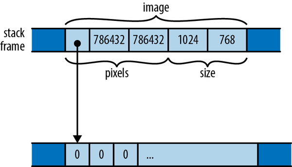

Long ago, when shepherds wanted to see if two herds of sheep were isomorphic, they would look for an explicit isomorphism.
John C. Baez and James Dolan, “Categorification”
Rust structs resemble struct types in C and C++, classes in Python, and objects in JavaScript. A struct assembles several values of assorted types together into a single value so you can deal with them as a unit. Given a struct, you can read and modify its individual components. And a struct can have methods associated with it that operate on its components.
In this chapter, we’ll explain in detail how structs are defined, how they are used, and what they look like in memory. We’ll cover how to add methods to them, how to define generic struct types that work with many different component types, and how to ask Rust to generate some handy methods for your structs.
The most common way to define a struct type looks like this:
/// A rectangle of eight-bit grayscale pixels.structGrayscaleMap{pixels:Vec<u8>,size:(usize,usize),}
This declares a type GrayscaleMap with two fields named pixels and size, of the given types. The convention in Rust is for all types, structs included, to have names that capitalize the first letter of each word, a convention called UpperCamelCase. Fields and functions are lowercase, with words separated by underscores. This is called snake_case.
You can construct a value of this type with a struct expression, like this:
letwidth=1024;letheight=576;letimage=GrayscaleMap{pixels:vec![0;width*height],size:(width,height),};
A struct expression starts with the type name (GrayscaleMap) and lists the name and value of each field, all enclosed in curly braces. There’s also shorthand for populating fields from local variables or arguments with the same name:
fnnew_map(size:(usize,usize),pixels:Vec<u8>)->GrayscaleMap{assert_eq!(pixels.len(),size.0*size.1);GrayscaleMap{pixels,size}}
The struct expression GrayscaleMap { pixels, size } is short for GrayscaleMap { pixels: pixels, size: size }. You can use key: value syntax for some fields and shorthand for others in the same struct expression.
To access a struct’s fields, use the familiar . operator:
assert_eq!(image.size,(1024,576));assert_eq!(image.pixels.len(),1024*576);
Like all other items, structs are private by default, visible only in the module where they’re declared and its submodules. You can make a struct visible outside its module by prefixing its definition with pub. The same goes for each of its fields, which are also private by default:
/// A rectangle of eight-bit grayscale pixels.pubstructGrayscaleMap{pubpixels:Vec<u8>,pubsize:(usize,usize),}
Even if a struct is declared pub, its fields can be private:
/// A rectangle of eight-bit grayscale pixels.pubstructGrayscaleMap{pixels:Vec<u8>,size:(usize,usize),}
Other modules can use this struct and any public associated functions it might have, but can’t access the private fields by name or use struct expressions to create new GrayscaleMap values. That is, creating a struct value requires all the struct’s fields to be visible. This is why you can’t write a struct expression to create a new String or Vec. These standard types are structs, but all their fields are private. To create one, you must use public associated functions like Vec::new().
When creating a struct value, you can use another struct of the same type to supply values for fields you omit. In a struct expression, if the named fields are followed by .. and an expression of the same type, any fields not mentioned previously take their values from the given expression. Suppose we have a struct representing a monster in a game:
// In this game, brooms are monsters. You'll see.structBroom{name:String,height:u32,health:u32,position:(f32,f32,f32),intent:BroomIntent,}/// Two possible alternatives for what a `Broom` could be working on.#[derive(Copy, Clone)]enumBroomIntent{FetchWater,DumpWater,}
The best fairy tale for programmers is The Sorcerer’s Apprentice: a novice magician enchants a broom to do his work for him, but doesn’t know how to stop it when the job is done. Chopping the broom in half with an axe just produces two brooms, each of half the size, but continuing the task with the same blind dedication as the original:
// Receive the input Broom by value, taking ownership.fnchop(b:Broom)->(Broom,Broom){// Initialize `broom1` mostly from `b`, changing only `height`. Since// `String` is not `Copy`, `broom1` takes ownership of `b`'s name.letmutbroom1=Broom{height:b.height/2,..b};// Initialize `broom2` mostly from `broom1`. Since `String` is not// `Copy`, we must clone `name` explicitly.letmutbroom2=Broom{name:broom1.name.clone(),..broom1};// Give each fragment a distinct name.broom1.name.push_str(" I");broom2.name.push_str(" II");(broom1,broom2)}
With that definition in place, we can create a broom, chop it in two, and see what we get:
lethokey=Broom{name:"Hokey".to_string(),height:60,health:100,position:(100.0,200.0,0.0),intent:BroomIntent::FetchWater,};let(hokey1,hokey2)=chop(hokey);assert_eq!(hokey1.name,"Hokey I");assert_eq!(hokey1.height,30);assert_eq!(hokey1.health,100);assert_eq!(hokey2.name,"Hokey II");assert_eq!(hokey2.height,30);assert_eq!(hokey2.health,100);
The new hokey1 and hokey2 brooms have received adjusted names, half the height, and all the health of the original.
Struct types like those discussed above are called named-field structs, and while they are by far the most common struct types Rust programmers will encounter, there are also two simpler kinds of struct types, called tuple structs and unit-like structs. Both are very similar to named-field structs in functionality and in-memory representation.
The second kind of struct type is called a tuple struct, because it resembles a tuple:
structBounds(usize,usize);
You construct a value of this type much as you would construct a tuple, except that you must include the struct name:
letimage_bounds=Bounds(1024,768);
The fields of a tuple struct can be accessed using the usual tuple syntax:
assert_eq!(image_bounds.0*image_bounds.1,786432);
Individual fields of a tuple struct may be public or not:
pubstructBounds(pubusize,pubusize);
The expression Bounds(1024, 768) looks like a function call, and in fact it is: defining the type also implicitly defines a function:
fnBounds(elem0:usize,elem1:usize)->Bounds{...}
Tuple structs are good for newtypes, structs with a single component that you define to get stricter type checking. For example, if you are working with ASCII-only text, you might define a newtype like this:
structAscii(Vec<u8>);
Using this type for your ASCII strings is much better than simply passing around Vec<u8> buffers and explaining what they are in the comments. The newtype helps Rust catch mistakes where some other byte buffer is passed to a function expecting ASCII text. We’ll expand on this example in Chapter 23.
Newtypes allow the compiler to type-check your integers:
structStudentId(u32);structCourseId(u32);fnenroll(s:StudentId,c:CourseId){...}
You could just use u32 for both arguments in this code, but if you use newtypes, Rust will catch the mistake when a caller accidentally reverses the arguments.
Now a word of caution. Tuple structs are essentially the same thing as regular named-field structs, but with meaningless integers for field names. Except for newtypes, we have found we often regret our tuple structs and change them to named-field structs later:
// this seemed fine at first...structOldRgbColor(u8,u8,u8);// ...but ultimately `color.r` reads better than `color.0`structNewRgbColor{r:u8,g:u8,b:u8,}
When in doubt, we recommend named-field structs.
The third kind of struct declares a type with no fields at all:
/// An error type indicating that the server is on fire./// No fields -- when this occurs, there's not much to say.structServerOnFireError;
A value of such a type occupies no memory, much like the unit type (). Rust doesn’t bother actually storing unit-like struct values in memory or generating code to operate on them. But logically, an empty struct is a type with values like any other—or more precisely, a type with one value:
leterr=ServerOnFireError;
This is similar to declaring a named-field struct without any fields:
structNoFields{}letn=NoFields{};
You’ve already encountered a unit-like struct when reading about the .. range operator in “Fields and Elements”. Whereas an expression like 3..5 is shorthand for the struct value Range { start: 3, end: 5 }, the expression .., a range omitting both endpoints, is shorthand for the unit-like struct value RangeFull.
In memory, both named-field and tuple structs are the same thing: a collection of values, of possibly mixed types, laid out in a particular way in memory. For example, earlier in the chapter we defined this struct:
structGrayscaleMap{pixels:Vec<u8>,size:(usize,usize),}
A GrayscaleMap value is laid out in memory as diagrammed in Figure 9-1.

GrayscaleMap struct in memoryUnlike C and C++, Rust doesn’t make specific promises about how it will order a struct’s fields in memory; this diagram shows only one possible arrangement. However, Rust does promise to store fields’ values directly in the struct’s block of memory. Whereas JavaScript, Python, and Java would put the pixels and size values each in their own heap-allocated blocks and have GrayscaleMap’s fields point at them, Rust embeds pixels and size directly in the GrayscaleMap value. Only the heap-allocated buffer owned by the pixels vector remains in its own block.
You can ask Rust to lay out structs in a way compatible with C and C++, using the #[repr(C)] attribute. We’ll cover this in detail in Chapter 24.
Throughout the book we’ve been calling methods on all sorts of values. We’ve pushed elements onto vectors with v.push(e), fetched their length with v.len(), checked Result values for errors with r.expect("msg"), and so on. You can define methods on your own struct types as well. Rather than appearing inside the struct definition, as in C++ or Java, Rust methods appear in a separate impl block.
Here, for example, we define a public struct Queue, and then give it two public methods, push_back and pop_front:
/// A first-in, first-out queue of characters.pubstructQueue{older:Vec<char>,// older elements, eldest last.younger:Vec<char>,// younger elements, youngest last.}implQueue{/// Pushes a character onto the back of a queue.pubfnpush_back(&mutself,c:char){self.younger.push(c);}/// Pops a character off the front of a queue. Returns `Some(c)` if there/// was a character to pop, or `None` if the queue was empty.pubfnpop_front(&mutself)->Option<char>{ifself.older.is_empty(){ifself.younger.is_empty(){returnNone;}// Bring the elements in younger over to older, and put them in// the promised order.std::mem::swap(&mutself.older,&mutself.younger);self.older.reverse();}// Now older is guaranteed to have something. Vec's pop method// already returns an Option, so we're set.self.older.pop()}}
Functions defined in an impl block are called associated functions, since they’re associated with a specific type. Functions defined anywhere else are sometimes called free functions—“free” as in unattached.
Associated functions that have a self argument are called methods. Associated functions without self are like static methods or constructors in other languages; we will cover them in a few pages.
Rust passes a method the value it’s being called on as its first argument, which must have the special name self. Since self’s type is obviously the one named at the top of the impl block, or a reference to that, Rust lets you omit the type, and write self, &self, or &mut self as shorthand for self: Queue, self: &Queue, or self: &mut Queue. You can use the longhand forms if you like, but almost all Rust code uses the shorthand.
In our example, the push_back and pop_front methods refer to the Queue’s fields as self.older and self.younger. Unlike C++ and Java, where the members of the “this” object are directly visible in method bodies as unqualified identifiers, a Rust method must explicitly use self to refer to the value it was called on, similar to the way Python methods use self, and the way JavaScript methods use this.
Since push_back and pop_front need to modify the Queue, they both take &mut self. However, when you call a method, you don’t need to borrow the mutable reference yourself; the ordinary method call syntax takes care of that implicitly. So with these definitions in place, you can use Queue like this:
letmutq=Queue{older:Vec::new(),younger:Vec::new(),};q.push_back('0');q.push_back('1');assert_eq!(q.pop_front(),Some('0'));q.push_back('∞');assert_eq!(q.pop_front(),Some('1'));assert_eq!(q.pop_front(),Some('∞'));assert_eq!(q.pop_front(),None);
Simply writing q.push_back(...) borrows a mutable reference to q, as if you had written (&mut q).push_back(...), since that’s what the push_back method’s self requires.
If a method doesn’t need to modify its self, then you can define it to take a shared reference instead. For example:
implQueue{pubfnis_empty(&self)->bool{self.older.is_empty()&&self.younger.is_empty()}}
Again, the method call expression knows which sort of reference to borrow:
assert!(q.is_empty());q.push_back('☉');assert!(!q.is_empty());
Or, if a method wants to take ownership of self, it can take self by value:
implQueue{pubfnsplit(self)->(Vec<char>,Vec<char>){(self.older,self.younger)}}
Calling this split method looks like the other method calls:
let(older,younger)=q.split();
But note that, since split takes its self by value, this moves the Queue out of q, meaning that q can no longer be used. Since split’s self now owns the queue, it’s able to move the individual vectors out of it and return them to the caller.
Sometimes, taking self by value like this, or even by reference, isn’t enough, so Rust also lets you pass self via smart pointer types.
A method’s self argument can also be a Box<Self>, Rc<Self>, or Arc<Self>. Such a method can only be called on a value of the given pointer type. Calling the method passes ownership of the pointer to it.
You won’t usually need to do this. A method that expects self by reference works fine when called on any of those pointer types:
letmutbq=Box::new(Queue::new());// `Queue::push_back` expects a `&mut Queue`, but `bq` is a `Box<Queue>`.// This is fine: Rust borrows a `&mut Queue` from the `Box` for the// duration of the call.bq.push_back('■');
For method calls and field access, Rust automatically borrows a reference from pointer types like Box, Rc, and Arc, so &self and &mut self are almost always the right thing in a method signature, along with the occasional self.
But if it does come to pass that some method needs ownership of a pointer to Self, and its callers have such a pointer handy, Rust will let you pass it as the method’s self argument. To do so, you must spell out the type of self, as if it were an ordinary parameter:
implOrbitComputeJob{/// Adds this job to the application-wide list of active jobs, so that/// we'll wait for it to finish on shutdown.fnmark_active(self:&Arc<Self>){letnew_ref=Arc::clone(self);// bump reference countApp::add_active_job(new_ref);}}
An impl block can also define associated functions that don’t take a self argument at all. They’re often used to provide constructor functions, like this:
implQueue{pubfnnew()->Queue{Queue{older:Vec::new(),younger:Vec::new(),}}}
This defines the associated function Queue::new. Now our example code becomes a bit more svelte:
letmutq=Queue::new();q.push_back('*');...
It’s conventional in Rust for constructor functions to be named new; we’ve already seen Vec::new, Box::new, HashMap::new, and others. But there’s nothing special about the name new. It’s not a keyword, and types often have other associated functions that serve as constructors, like Vec::with_capacity.
Although you can have many separate impl blocks for a single type, they must all be in the same crate that defines that type. However, Rust does let you attach your own methods to other types; we’ll explain how in Chapter 11.
If you’re used to C++ or Java, separating a type’s methods from its definition may seem unusual, but there are several advantages to doing so:
It’s always easy to find a type’s data members. In large C++ class definitions, you might need to skim hundreds of lines of member function definitions to be sure you haven’t missed any of the class’s data members; in Rust, they’re all in one place.
Although one can imagine fitting methods into the syntax for named-field structs, it’s not so neat for tuple and unit-like structs. Pulling methods out into an impl block allows a single syntax for all three. In fact, Rust uses this same syntax for defining methods on types that are not structs at all, such as enum types and primitive types like i32. (The fact that any type can have methods is one reason Rust doesn’t use the term object much, preferring to call everything a value.)
The same impl syntax also serves neatly for implementing traits, which we’ll go into in Chapter 11.
Another feature of languages like C# and Java that Rust adopts in its type system is the idea of values associated with a type, rather than a specific instance of that type. In Rust, these are known as associated constants.
As the name implies, associated constants are constant values. They’re often used to specify commonly used values of a type. For instance, you could define a two-dimensional vector for use in linear algebra with an associated unit vector:
pubstructVector2{x:f32,y:f32,}implVector2{constZERO:Vector2=Vector2{x:0.0,y:0.0};constUNIT:Vector2=Vector2{x:1.0,y:0.0};}
These values are associated with the type itself, and you can use them without referring to another instance of Vector2. Much like associated functions, they are accessed by naming the type with which they’re associated, followed by their name:
letscaled=Vector2::UNIT.scaled_by(2.0);
Nor does an associated constant have to be of the same type as the type it’s associated with; we could use this feature to add IDs or names to types. For example, if there were several types similar to Vector2 that needed to be written to a file and then loaded into memory later, an associated constant could be used to add names or numeric IDs that could be written next to the data to identify its type:
implVector2{constNAME:&'staticstr="Vector2";constID:u32=18;}
Our earlier definition of Queue is unsatisfying: it is written to store characters, but there’s nothing about its structure or methods that is specific to characters at all. If we were to define another struct that held, say, String values, the code could be identical, except that char would be replaced with String. That would be a waste of time.
Fortunately, Rust structs can be generic, meaning that their definition is a template into which you can plug whatever types you like. For example, here’s a definition for Queue that can hold values of any type:
pubstructQueue<T>{older:Vec<T>,younger:Vec<T>,}
You can read the <T> in Queue<T> as “for any element type T...”. So this definition reads, “For any type T, a Queue<T> is two fields of type Vec<T>.” For example, in Queue<String>, T is String, so older and younger have type Vec<String>. In Queue<char>, T is char, and we get a struct identical to the char-specific definition we started with. In fact, Vec itself is a generic struct, defined in just this way.
In generic struct definitions, the type names used in <angle brackets> are called type parameters. An impl block for a generic struct looks like this:
impl<T>Queue<T>{pubfnnew()->Queue<T>{Queue{older:Vec::new(),younger:Vec::new(),}}pubfnpush_back(&mutself,t:T){self.younger.push(t);}pubfnis_empty(&self)->bool{self.older.is_empty()&&self.younger.is_empty()}...}
You can read the line impl<T> Queue<T> as something like, “for any type T, here are some associated functions available on Queue<T>.” Then, you can use the type parameter T as a type in the associated function definitions.
The syntax may look a bit redundant, but the impl<T> makes it clear that the impl block covers any type T, which distinguishes it from an impl block written for one specific kind of Queue, like this one:
implQueue<f64>{fnsum(&self)->f64{...}}
This impl block header reads, “Here are some associated functions specifically for Queue<f64>.” This gives Queue<f64> a sum method, available on no other kind of Queue.
Every impl block, generic or not, defines the special type parameter Self (note the CamelCase name) to be whatever type we’re adding methods to. In the preceding code, Self would be Queue<T>, so we can abbreviate Queue::new’s definition a bit further:
pubfnnew()->Self{Queue{older:Vec::new(),younger:Vec::new(),}}
You might have noticed that, in the body of new, we didn’t need to write the type parameter in the construction expression; simply writing Queue { ... } was good enough. This is Rust’s type inference at work: since there’s only one type that works for that function’s return value—namely, Queue<T>—Rust supplies the parameter for us. However, you’ll always need to supply type parameters in function signatures and type definitions. Rust doesn’t infer those; instead, it uses those explicit types as the basis from which it infers types within function bodies.
Self can also be used in this way; we could have written Self { ... } instead. It’s up to you to decide which you find easiest to understand.
For associated function calls, you can supply the type parameter explicitly using the ::<> (turbofish) notation:
letmutq=Queue::<char>::new();
But in practice, you can usually just let Rust figure it out for you:
letmutq=Queue::new();letmutr=Queue::new();q.push_back("Marrakesh");// apparently a Queue<&str>r.push_back(6798.383);// apparently a Queue<f64>
In fact, this is exactly what we’ve been doing with Vec, another generic struct type, throughout the book..
As we discussed in “Structs Containing References”, if a struct type contains references, you must name those references’ lifetimes. For example, here’s a struct that might hold references to the greatest and least elements of some slice:
structExtrema<'elt>{greatest:&'elti32,least:&'elti32,}
Earlier, we invited you to think of a declaration like struct Queue<T> as meaning that, given any specific type T, you can make a Queue<T> that holds that type. Similarly, you can think of struct Extrema<'elt> as meaning that, given any specific lifetime 'elt, you can make an Extrema<'elt> that holds references with that lifetime.
Here’s a function to scan a slice and return an Extrema value whose fields refer to its elements:
fnfind_extrema<'s>(slice:&'s[i32])->Extrema<'s>{letmutgreatest=&slice[0];letmutleast=&slice[0];foriin1..slice.len(){ifslice[i]<*least{least=&slice[i];}ifslice[i]>*greatest{greatest=&slice[i];}}Extrema{greatest,least}}
Here, since find_extrema borrows elements of slice, which has lifetime 's, the Extrema struct we return also uses 's as the lifetime of its references. Rust always infers lifetime parameters for calls, so calls to find_extrema needn’t mention them:
leta=[0,-3,0,15,48];lete=find_extrema(&a);assert_eq!(*e.least,-3);assert_eq!(*e.greatest,48);
Because it’s so common for the return type to use the same lifetime as an argument, Rust lets us abbreviate functions like this by leaving out the lifetime parameter. We can write find_extrema’s signature like this, with no change in meaning:
fnfind_extrema(slice:&[i32])->Extrema<'_>{...}
Rust sees that the argument slice is a reference and infers that this function has an unwritten lifetime parameter. In the return type, Extrema<'_>, the placeholder lifetime '_ refers to this implicit lifetime.
However, for functions with multiple arguments that carry lifetimes, Rust often refuses to guess about lifetimes in the return type and makes you spell everything out.
A generic struct can also take parameters that are constant values. For example, you could define a type representing polynomials of arbitrary degree like so:
/// A polynomial of degree N - 1.structPolynomial<constN:usize>{/// The coefficients of the polynomial.////// For a polynomial a + bx + cx² + ... + zxⁿ⁻¹,/// the `i`'th element is the coefficient of xⁱ.coefficients:[f64;N],}
With this definition, Polynomial<3> is a quadratic polynomial, for example. The <const N: usize> clause says that the Polynomial type expects a usize value as its generic parameter, which it uses to decide how many coefficients to store.
Unlike Vec, which has fields holding its length and capacity and stores its elements in the heap, Polynomial stores its coefficients directly in the value, and nothing else. The length is given by the type. (The capacity isn’t needed, because Polynomials can’t grow dynamically.)
We can use the parameter N in the type’s associated functions:
impl<constN:usize>Polynomial<N>{fnnew(coefficients:[f64;N])->Polynomial<N>{Polynomial{coefficients}}/// Evaluates the polynomial at `x`.fneval(&self,x:f64)->f64{// Horner's method is numerically stable, efficient, and simple:// c₀ + x(c₁ + x(c₂ + x(c₃ + ... x(c[n-1] + x c[n]))))letmutsum=0.0;foriin(0..N).rev(){sum=self.coefficients[i]+x*sum;}sum}}
Here, the new function accepts an array of length N, and takes its elements as the coefficients of a fresh Polynomial value. The eval method iterates over the range 0..N to find the value of the polynomial at a given point x.
As with type and lifetime parameters, Rust can often infer the right values for constant parameters:
usestd::f64::consts::FRAC_PI_2;// π/2// Approximate the `sin` function: sin x ≅ x - 1/6 x³ + 1/120 x⁵// Around zero, it's pretty accurate!letsine_poly=Polynomial::new([0.0,1.0,0.0,-1.0/6.0,0.0,1.0/120.0]);assert_eq!(sine_poly.eval(0.0),0.0);assert!((sine_poly.eval(FRAC_PI_2)-1.).abs()<0.005);
Since we pass Polynomial::new an array with six elements, Rust knows we must be constructing a Polynomial<6>. The eval method knows how many iterations the for loop should run simply by consulting its Self type. Since the length is known at compile time, the compiler will probably replace the loop entirely with straight-line code.
A const generic parameter may be any integer type, char, or bool. Floating-point numbers, enums, and other types are not permitted.
If the struct takes other kinds of generic parameters, lifetime parameters must come first, followed by types, followed by any const values. For example, a type that holds an array of references could be declared like this:
structLumpOfReferences<'a,T,constN:usize>{the_lump:[&'aT;N],}
Constant generic parameters are a relatively new addition to Rust, and their use is somewhat restricted for now. For example, it would have been nicer to define Polynomial like this:
/// A polynomial of degree N.structPolynomial<constN:usize>{coefficients:[f64;N+1],}
However, Rust rejects this definition:
error: generic parameters may not be used in const operations|6 | coefficients: [f64; N + 1]| ^ cannot perform const operation using `N`|= help: const parameters may only be used as standalone argumentshere, i.e. `N`
While it’s fine to say [f64; N], a type like [f64; N + 1] is apparently too risqué for Rust. But Rust imposes this restriction for the time being to avoid confronting issues like this:
structKetchup<constN:usize>{tomayto:[i32;N&!31],tomahto:[i32;N-(N%32)],}
As it turns out, N & !31 and N - (N % 32) are equal for all values of N, so tomayto and tomahto always have the same type. It should be permitted to assign one to the other, for example. But teaching Rust’s type checker the bit-fiddling algebra it would need to be able to recognize this fact risks introducing confusing corner cases to an aspect of the language that is already quite complicated. Of course, simple expressions like N + 1 are much more well-behaved, and there is work underway to teach Rust to handle those smoothly.
Since the concern here is with the type checker’s behavior, this restriction applies only to constant parameters appearing in types, like the length of an array. In an ordinary expression, you can use N however you like: N + 1 and N & !31 are perfectly acceptable.
If the value you want to supply for a const generic parameter is not simply a literal or a single identifier, then you must wrap it in braces, as in Polynomial<{5 + 1}>. This rule allows Rust to report syntax errors more accurately.
Structs can be very easy to write:
structPoint{x:f64,y:f64,}
However, if you were to start using this Point type, you would quickly notice that it’s a bit of a pain. As written, Point is not copyable or cloneable. You can’t print it with println!("{point:?}"); and it does not support the == and != operators.
Each of these features has a name in Rust—Copy, Clone, Debug, and PartialEq. They are called traits. In Chapter 11, we’ll show how to implement traits by hand for your own structs. But in the case of these standard traits, and several others, you don’t need to implement them by hand unless you want some kind of custom behavior. Rust can automatically implement them for you, with mechanical accuracy. Just add a #[derive] attribute to the struct:
#[derive(Copy, Clone, Debug, PartialEq)]structPoint{x:f64,y:f64,}
Each of these traits can be implemented automatically for a struct, provided that each of its fields implements the trait. We can ask Rust to derive PartialEq for Point because its two fields are both of type f64, which already implements PartialEq.
Rust can also derive PartialOrd, which would add support for the comparison operators <, >, <=, and >=. We haven’t done so here, because comparing two points to see if one is “less than” the other is actually a pretty weird thing to do. There’s no one conventional order on points. So we choose not to support those operators for Point values. Cases like this are one reason that Rust makes us write the #[derive] attribute rather than automatically deriving every trait it can. Another reason is that implementing a trait is automatically a public feature, so copyability, cloneability, and so forth are all part of your struct’s public API and should be chosen deliberately.
We’ll describe Rust’s standard traits in detail and explain which ones are #[derive]able in Chapter 13.
Mutability is like wasabi: in excess, it causes problems, but you often want just a little bit of it. For example, say your spider robot control system has a central struct, SpiderRobot, that contains settings and I/O handles. It’s set up when the robot boots, and the values never change:
pubstructSpiderRobot{species:String,web_enabled:bool,leg_devices:[OwnedFd;8],...}
Every major system of the robot is handled by a different struct, and each one has a pointer back to the SpiderRobot:
usestd::rc::Rc;pubstructSpiderSenses{robot:Rc<SpiderRobot>,// <-- pointer to settings and I/Oeyes:[Camera;32],motion:Accelerometer,...}
The structs for web construction, predation, venom flow control, and so forth also all have an Rc<SpiderRobot> smart pointer. Recall that Rc stands for reference counting, and a value in an Rc box is always shared and therefore always immutable.
Now suppose you want to add a little logging to the SpiderRobot struct, using the standard File type. There’s a problem: a File has to be mut. All the methods for writing to it require a mut reference.
This sort of situation comes up fairly often. What we need is a little bit of mutable data (a File) inside an otherwise immutable value (the SpiderRobot struct). This is called interior mutability. Rust offers several flavors of it; in this section, we’ll discuss the two most straightforward types: Cell<T> and RefCell<T>, both in the std::cell module.
A Cell<T> is a struct that contains a single private value of type T. The only special thing about a Cell is that you can get and set the field even if you don’t have mut access to the Cell itself:
Cell::new(value)Creates a new Cell, moving the given value into it.
cell.get()Returns a copy of the value in the cell.
cell.set(value)Stores the given value in the cell, dropping the previously stored value.
This method takes self as a non-mut reference:
fnset(&self,value:T)// note: not `&mut self`
This is, of course, unusual for methods named set. By now, Rust has trained us to expect that we need mut access if we want to make changes to data. But by the same token, this one unusual detail is the whole point of Cells. They’re simply a safe way of bending the rules on immutability—no more, no less.
Cells also have a few other methods, which you can read about in the documentation.
A Cell would be handy if you were adding a simple counter to your SpiderRobot. You could write:
usestd::cell::Cell;pubstructSpiderRobot{...hardware_error_count:Cell<u32>,...}
Then even non-mut methods of SpiderRobot can access that u32, using the .get() and .set() methods:
implSpiderRobot{/// Increases the error count by 1.pubfnadd_hardware_error(&self){letn=self.hardware_error_count.get();self.hardware_error_count.set(n+1);}/// True if any hardware errors have been reported.pubfnhas_hardware_errors(&self)->bool{self.hardware_error_count.get()>0}}
This is easy enough, but it doesn’t solve our logging problem. Cell does not let you call mut methods on a shared value. The .get() method returns a copy of the value in the cell, so it works only if T implements the Copy trait. For logging, we need a mutable File, and File isn’t copyable.
The right tool in this case is a RefCell. Like Cell<T>, RefCell<T> is a generic type that contains a single value of type T. Unlike Cell, RefCell supports borrowing references to its T value:
RefCell::new(value)ref_cell.borrow()Returns a Ref<T>, which is essentially just a shared reference to the value stored in ref_cell.
This method panics if the value is already mutably borrowed; see details to follow.
ref_cell.borrow_mut()Returns a RefMut<T>, essentially a mutable reference to the value in ref_cell.
This method panics if the value is already borrowed; see details to follow.
ref_cell.try_borrow(), ref_cell.try_borrow_mut()Work just like borrow() and borrow_mut(), but return a Result. Instead of panicking if the value is already mutably borrowed, they return an Err value.
Again, RefCell has a few other methods, which you can find in the documentation.
The two borrow methods panic only if you try to break the Rust rule that mut references are exclusive references. For example, this would panic:
usestd::cell::RefCell;letref_cell:RefCell<String>=RefCell::new("hello".to_string());letr=ref_cell.borrow();// ok, returns a Ref<String>letcount=r.len();// ok, returns "hello".len()assert_eq!(count,5);letmutw=ref_cell.borrow_mut();// panic: already borrowedw.push_str(" world");
To avoid panicking, you could put these two borrows into separate blocks. That way, r would be dropped before you try to borrow w.
This is a lot like how normal references work. The only difference is that normally, when you borrow a reference to a variable, Rust checks at compile time to ensure that you’re using the reference safely. If the checks fail, you get a compiler error. RefCell enforces the same rule using run-time checks. So if you’re breaking the rules, you get a panic (or an Err, for try_borrow and try_borrow_mut).
Now we’re ready to put RefCell to work in our SpiderRobot type:
pubstructSpiderRobot{...log_file:RefCell<File>,...}implSpiderRobot{/// Writes a line to the log file.pubfnlog(&self,message:&str){letmutfile=self.log_file.borrow_mut();// `writeln!` is like `println!`, but sends// output to the given file.writeln!(file,"{message}").unwrap();}}
The variable file has type RefMut<File>. It can be used just like a mutable reference to a File. For details about writing to files, see Chapter 18.
Cells are easy to use. Having to call .get() and .set() or .borrow() and .borrow_mut() is slightly awkward, but that’s just the price we pay for bending the rules. The other drawback is less obvious and more serious: cells—and any types that contain them—are not thread-safe. Rust therefore will not allow multiple threads to access them at once. We’ll describe thread-safe flavors of interior mutability in Chapter 19, when we discuss “Mutex<T>”, “Atomics”, and “Global Variables”.
Whether a struct has named fields or is a tuple struct, it is an aggregation of other values: if I have a SpiderSenses struct, then I have an Rc pointer to a shared SpiderRobot struct, and I have eyes, and I have an accelerometer, and so on. Rust also supports types that are designed to select one among several possible types of value. Such types turn out to be so useful that they’re ubiquitous in the language, and they are the subject of the next chapter.